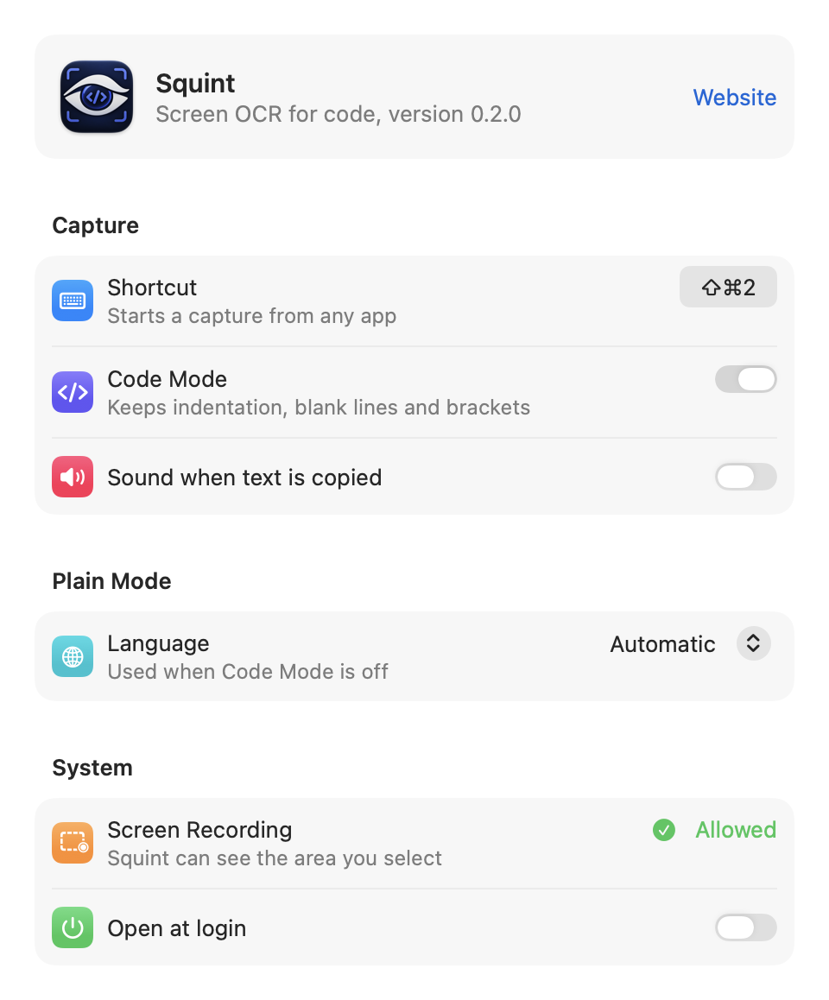

Copy code from any screen, shape intact.
Squint is screen OCR for programmers on macOS. Indentation, blank lines and closing brackets make it to your clipboard. Editor line numbers don't. It runs on your Mac in about a tenth of a second, and it's free.
$ brew tap dhruv-sharma29/squint https://github.com/Dhruv-Sharma29/Squint $ brew install dhruv-sharma29/squint/squint
For macOS 14 or later. MIT-licensed.
What lands on your clipboard
- ✓function groupBy(items, key) {
- ✓··const groups = {};
- ✓··for (const item of items) {
- ✓····const k = item[key];
- ✓····if (!groups[k]) {
- ✓······groups[k] = [];
- ✓····}
- ✓····groups[k].push(item);
- ✓··}
- ✓
- ✓··return groups;
- ✓}
12 of 12 lines exactly right. 0% character errors.
- ✗function groupBy␣(items, key) {
- ✗const groups = {};
- ✗for (const item of items) {
- ✗const k = item[keyl;
- ✗if (!groups[k]) {
- ✗groups[k] = [];
- ✗groups[kl.push(item);
- ✗return groups;
- ✗Missing: all indentation, three closing braces and the blank line
0 of 12 lines exactly right. 19.4% character errors.
Real output for this frame. Plain OCR is Apple Vision with default settings, the engine behind the text recognition built into macOS.
What goes wrong when you OCR code, and what Squint does about it
General-purpose OCR is built for prose. Code breaks it in the same few ways, every time.
| Problem | Plain OCR | Squint |
|---|---|---|
| Indentation is flattened, so Python becomes a different program | return password | return password |
| A line holding only a closing brace vanishes | (line missing) | } |
| Editor line numbers are glued to the code | 12 return groups; | return groups; |
| A closing bracket is read as the letter l | item[keyl; | item[key]; |
| An opening brace is read as the letter f | if (isRetry) f | if (isRetry) { |
| Autocorrect adds spaces code never had | groupBy (items) | groupBy(items) |
Measured on code it was never tuned on
A public benchmark of functions from Python's standard library and npm, rendered in six editor themes and six fonts, with line numbers and paused-video blur. Every change is developed on one set and reported on another.
- 2.4%
- character errors on a fresh held-out set nothing was developed on
- 61%
- of lines exactly right, against 2–4% for built-in OCR
- 0.13 s
- from selection to clipboard, offline
The honest part: most captures still need a small fix before they run, because one misread character is enough to stop code compiling. An AI chat assistant transcribed every benchmark image perfectly; Squint's advantage over it is speed, privacy and cost. The full evaluation has every number, including where Squint loses.
Fits the way you already work
- One shortcut
- Press ⇧⌘2 and drag over code, or record any shortcut you like in Settings.
- Line numbers stripped
- Capture an editor with its gutter and get only the code, even when the numbers are too blurry to read.
- Spotlight, Siri and Shortcuts
- Type "Squint" in Spotlight to capture. In Shortcuts, every action returns the text for your next step. Needs a build signed with your Apple ID.
- Screenshots you already have
- Read an image from the clipboard, or an image file copied in Finder.
- Prose too
- Turn off Code Mode for paragraphs, with automatic language detection across up to 33 languages, including Hindi.
- QR codes and a command line
- Select a QR code to copy its link. Script it with
squint screenshot.png.
A menu bar app that stays out of the way
- No window, no Dock icon. Squint waits in the menu bar until you press its shortcut.
- Settings on one screen. Record your own shortcut, choose Code Mode or a language for prose, and open Squint at login.
- It tells you what's wrong. If macOS hasn't granted Screen Recording yet, Settings and the menu say so, with a button that opens the right pane.
- Feedback you can hear, too. VoiceOver announces every copy and every failure, and a sound is one switch away.

Your screen stays on your Mac
- No network, at all. Recognition runs on Apple's on-device Vision. Squint produces identical output with every network connection blocked.
- Screenshots don't linger. Each capture is a temporary file, deleted as soon as it has been read.
- One permission. Screen Recording, so Squint can see the area you select. No account, no analytics.
Install in a minute
Install with Homebrew
Homebrew builds Squint on your Mac in about 20 seconds, so Gatekeeper never blocks it.
$ brew tap dhruv-sharma29/squint https://github.com/Dhruv-Sharma29/Squint $ brew install dhruv-sharma29/squint/squint
Start it, now and at every login
$ brew services start squintAllow Screen Recording
On your first capture, macOS asks for permission. Allow Squint, then quit and reopen it.
Capture
Press ⇧⌘2, drag over some code, and paste.
Prefer to build it yourself? See the installation guide.
Questions
Why not paste the screenshot into an AI chatbot?
On Squint's benchmark, an AI chat assistant transcribed every image perfectly, and Squint didn't. Squint's case is different: one shortcut and about a tenth of a second instead of an upload, a prompt and a wait; it works offline; your screen never leaves your Mac, which matters for work code and exams; and it's free with no limits.
How accurate is it?
Across 99 benchmark images, Squint averaged 2.4–3.4% character errors, against 15.8–19.2% for the OCR built into macOS, and got 53–71% of lines exactly right. Most captures still need a small fix before they run, usually one misread character. The evaluation has every number.
Does it work offline?
Yes. Recognition uses Apple's on-device Vision framework, and Squint makes no network requests. It produces identical output with all network access blocked.
Which languages does it read?
Code Mode is tested on Python and JavaScript and works on most code written in Latin script. Plain Mode reads prose in up to 33 languages on current macOS, including Hindi and Marathi, and can detect the language automatically.
Why don't Squint's actions show up in Spotlight?
macOS only runs Spotlight, Siri and Shortcuts actions for apps signed with an Apple Team ID, and Homebrew builds aren't. Build from source with your free Apple Development certificate to get them; the usage guide shows how. Everything else works either way.
Which Macs does it run on?
macOS 14 Sonoma or later. It's built and tested on Apple silicon; Intel Macs should work but aren't tested yet.
Is it really free?
Yes. Squint is open source under the MIT license, with no trial, account or upsell.